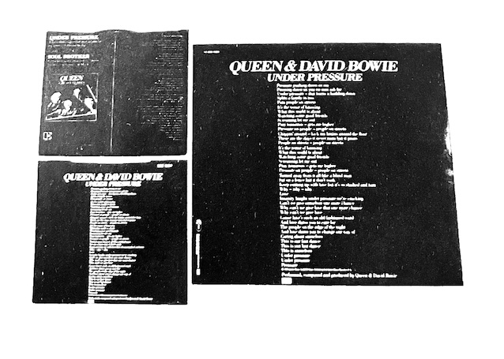
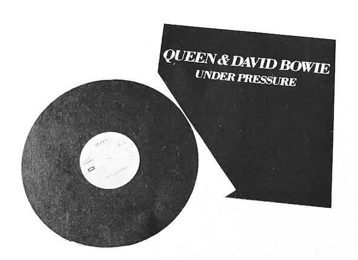
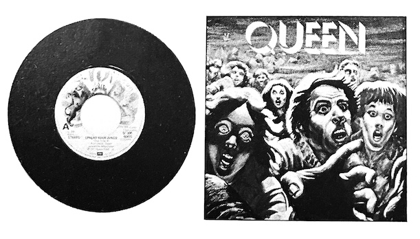
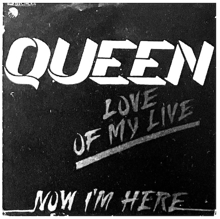
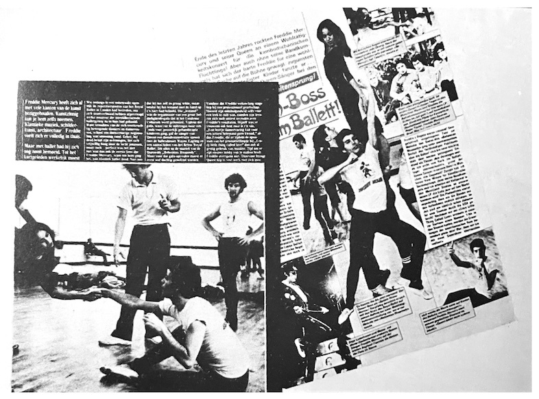

We're sure every Queen fan has their own unique way of loving and supporting them. While many fans are drawn to the band's music and public image, this section will show off everything from records to clippings, posters, and memorabilia—things that others simply can't get their hands on—to fellow Queen lovers. But of course, revealing the collectors' names and addresses would obviously cause them a considerable amount of personal trouble, so we are using using pseudonymns.

Import version of the new single Under Pressure
The top left is the American version, the bottom left is the British version, and the LP-sized record to the right is a rare Dutch version. Unlike the Japanese version, the jacket and cover are combined.

The front and back of the Dutch pressing
Of course there are tracks on both sides. 30 cm, 45 RPM. I've heard that the larger size and wider grooves result in significantly better sound quality compared to a 17 cm single. To be honest, as an amateur, I can't really tell the difference. The label is gold.
Other albums in this collection include bootlegs (including by Smile and Larry Lurex) [sic., technically these aren't bootlegs —QIJ], such as See What A Fool I've Been (released in the UK February 25th, 1974), but we'll cover those in another issue...

The Dutch version of Spread Your Wings
Released in February of 1978, the Dutch version is shown with the picture cover on the right and the record itself on the left. The label illustration (a lion?) is in vibrant colors [note: this is clearly the Queen crest...]. It's unique and appealing, unlike the staid designs of the Japanese release.

West German version of Love of My Life
This record was released in June 1979. The title is written in orange letters on a black background, but what's interesting is that the word "Life" is written as "LIVE". Whether this is intentional or not is unknown, but it's a valuable album cover.

This photospread was featured in German rock magazine Rocky and shows Freddie having a dance lesson. The sensual and energetic movements he performed onstage were based on fundamental modern dance choreography and rhythm.